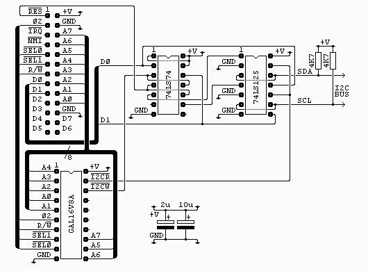
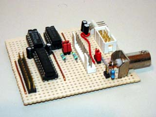
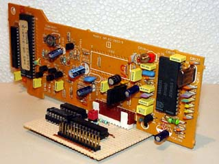
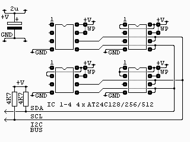
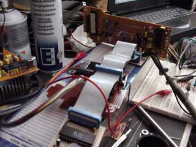

|
|
I2C Bus interface. By Lee Davison. |
|

The connector on the top left of the diagram is from my own 6502 boards (see sbc project) and is as it is for two reasons. It's easy to wire on a stripboard layout and I have a lot of 26 way ribbon, headers and plugs. All the signals are directly from the 6502 except /SEL0 and /SEL1 which are used to select the block $F1xx with /SEL0 = 1 and /SEL1 = 0.
There is no socket shown for the I2C bus, this is up to the user.
The two capacitors are low ESR electrolytics and are placed near the GAL and between the two chips. If you don't have this type to hand you can use standard electrolytics with some low value ceramic capacitor, say 0.1uF, in parallel.
The GAL16V8A is used purely to generate the read and write strobes. Each is a negative going pulse coincident with phase 2. The interface uses just one byte in the address range. For anyone interested the equations for this chip are in i2c_01.pld and can be compiled with WinCUPL. The fuse file, i2c_01.jed and the compiler list file i2c_01.txt are also included.
The 74LS74 is used to latch the two lowest bits of the data bus during write access to the interface. The reset line is connected so that both of these outputs are set at startup (this disables the I2C bus until required). This is very similar to my AT keyboard with the exeption that reset sets the opposite state.
The outputs from the latches are used to drive the enable pins on two of the four buffers from the 74LS125, these are then used to drive the data and clock lines of the I2C bus. The buffers have their inputs tied low so behave like open collector outputs when used like this.
The other two buffers are used to drive the data bus during read access.
 
256k byte memory.

Software.
The software has a four main routines to handle the I2C bus ...This is a description of all the I2C routines ...
SendAddr Send start and slave address to the I2C bus. SendData Send data byte(s) to an addressed device. ReadData Read data byte(s) from an addressed device. StopI2c generates a stop condition on the i2c bus. SendAddrView the sourceReadDataThis routine sends the slave address to the I2C bus. There are a number of locations that need set-up before this routine is called. Each device has an 8 bit address, the lowest bit of which is a read/write bit, this address is set in I2cAddr. Next is the byte count, if you are just addressing the device this can be zero but otherwise it is the byte pair in I2cCountL/H. Lastly, if there is data to be sent, is the buffer pointer TxBuffL/H. This should be set to the start of the data to be sent. If all is well this routine exits with Cb=0 and the bus in an held state, you can then either send data, receive data or just send stop.
SendDataThis routine reads I2cCountL/H bytes from an already addressed device. It should be entered with RxBuffL/H pointing to a suitable buffer area. On exit Cb=0 if there were no errors and the I2C bus is in a held state, you can then either receive more data or just send stop.
StopI2cThe same as ReadData but sends I2cCountL/H bytes to an already addressed device. Again on exit Cb=0 if there were no errors and the I2C bus is in a held state, you can then either send more data or just send stop.
ByteInThis routine just generates a stop condition on i2c bus. On entry it is assumed only that the clock is held low.
ByteOutRead a byte from the I2C bus, the byte is returned in A. Entry to this routine should be with the bus in a held state and it exits with the bus in the same state. Note there is no timeout on this routine so it could end up waiting for ever. After this routine you should send an ack but if it's the end of what you want you can just send stop.
DoAckSend a byte to the I2C bus, the byte to be sent is in A. Entry to this routine should be with the bus in a held state and it exits with the bus in the same state. Note there is no timeout on this routine so it could end up waiting for ever. Returns with the ack bit in Cb=0.
GetAckSend ack bit, the ack bit state to send is in Cb. Entry is with the clock low, then ack needs to be set and then the clock released. The routine then waits for the clock to rise before pulling it low and then exiting.
Get the ack bit, the received ack bit is returned in Cb. Entry is with the clock low, then the data line is released followed by the clock. Then, once the clock rises, the ack bit is read.
.asm driver
EhBASIC teletext
|  | |||
| Last page update: 28th April, 2002. | e-mail me
 |